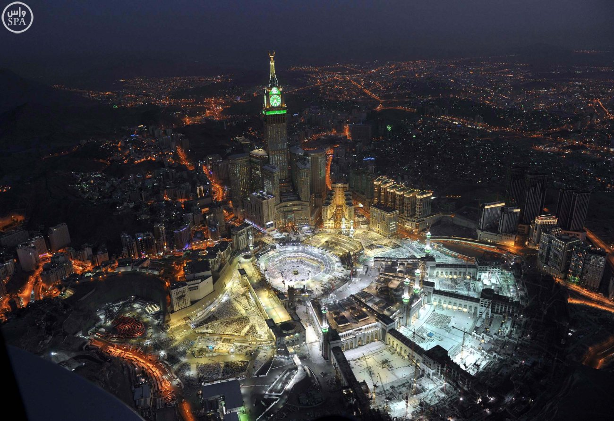

Introduction
Makkah al-Mukarramah is the holiest city in Islam and the capital of the Mecca Province of Saudi Arabia. The city is 70 km (43 mi) inland from Jeddah on the Red Sea, in a narrow valley 277 m (909 ft) above sea level.
Information
What is the population of Makkah in 2021
According to the recent population census statistics,
which were established on all Saudi cities,
the city of Makkah has a population of about 1.5 million people,
divided between citizens of Saudi citizenship and residents and expatriates from different countries of the world.
Masjid al-Haram
The Holy Mosque is a mosque in Islam in Mecca, in the west of the Kingdom of Saudi Arabia, in the center of which is the Holy Kaaba, which is the first house placed for people on the face of the earth to worship God in it according to the Islamic vision. It is a spot on the face of the earth for Muslims. And the Grand Mosque is the kiss of Muslims in their prayers, and to him they perform Hajj. It was called the Grand Mosque for the sanctity of fighting in it since the Prophet Muhammad entered Makkah victoriously
Religious Sites in Makkah
- Kaaba
- Masjid al-Haram
- Station of Ibrahim
- Mount Arafat
Number of pilgrims
| Years | pilgrims of KSA | pilgrims |
|---|---|---|
| 2020 | 10000 | |
| 2019 | 634.379 | 1.855.027 |
| 2018 | 612.953 | 1.758.722 |
| 2017 | 600.108 | 1.752.014 |
| 2016 | 537.537 | 1.325.372 |
In a word, It doesn't surprise us to discover that Mecca has Spiritual influence on every Muslim, We don't exaggerate when we say that Mecca is the purest and most sacred land created by God